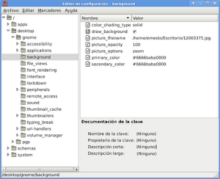

Cambiando la configuración de gnome con gconf desde python
Posted on Fri 17 July 2009 in Tutorial,Desarrollo • 1 min read
En gnome se tiene la herramienta gconf-editor donde se puede cambiar la configuración del escritorio y de las aplicaciones.
La figura muestra el editor:

La idea es usar el módulo de python llamado gconf para manipular parámetros de configuración del escritorio.
Se importa el módulo gconf
>>> import gconf
#Conectarse con el escritorio gnome.
>>> gconfClient = gconf.client_get_default()
#Se le asigna el nombre de usuario a la aplicación apps/pyconchatter/
>>> gconfClient.set_string("/apps/pyconchatter/username", "ecrespo")
True
#Se obtiene el nombre de usuario de la aplicación pyconchatter
>>> usuario = gconfClient.get_string("/apps/pyconchatter/username")
>>> print usuario
ecrespo
>>>
>>> panel = gconfClient.get_string("/apps/panel/toplevels/panel_1/auto_hide")
>>> print panel
None
#Se obtiene los valores de los accesos rápidos del teclado para el orca.
>>> print gconfClient.get_string("/apps/metacity/keybinding_commands/command_1")
orca
>>> print gconfClient.get_string("/apps/metacity/global_keybindings/run_command_1")
o
>>>
#Devuelve el nombre del archivo del fondo de pantalla del escritorio.
>>> print gconfClient.get_string("/desktop/gnome/background/picture_filename")
/home/ernesto/Escritorio/12003375.jpg
Con este módulo se pueden hacer aplicaciones gráficas con gtk y los parámetros de configuración de la aplicación se puede manejar desde gconf con python.
===
¡Haz tu donativo! Si te gustó el artículo puedes realizar un donativo con Bitcoin (BTC) usando la billetera digital de tu preferencia a la siguiente dirección: 17MtNybhdkA9GV3UNS6BTwPcuhjXoPrSzV
O Escaneando el código QR desde billetera: